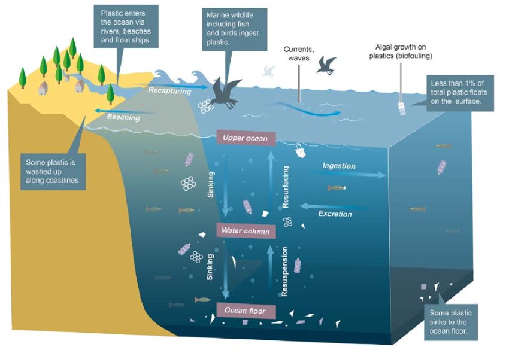
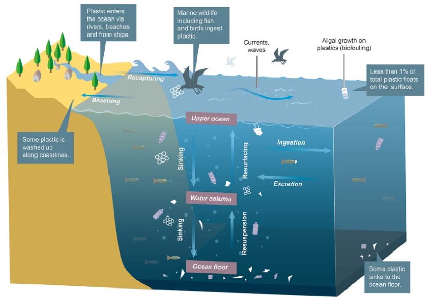

The Fate of Discarded Plastics
Made by: Arosio Lorenzo, Friciu Robert, Zaman Azhar
Invisible Plastics, Visible Impact: A Call to Awareness and Change
Henderson Island is a powerful example of ocean plastic pollution. This tiny, uninhabited island in the Pacific Ocean has over 19 tons of trash on its white sandy beaches. That’s an average of 672 pieces of trash per square meter. While some debris comes from illegal fishing boats or rigs, much of it is carried by the powerful South Pacific Gyre.
How Does Plastic End Up in the Ocean?
Plastic is lightweight and can easily be blown away during transport, ending up in rivers or the ocean.
Littering in the streets allows wind and rain to carry plastic waste into waterways.
Microplastics from products like synthetic clothes are flushed into wastewater, which often isn’t filtered well enough to catch them. These particles are ingested by marine life and can even enter our food chain.
What Happens to Plastic After We Throw It Away?
When we throw plastic away, it doesn’t simply vanish. Most of it ends up in landfills, where it can persist for hundreds of years. Rainwater mixing with landfill waste creates a toxic liquid called leachate, which can seep into the soil and nearby rivers, endangering ecosystems and human health. Additionally, some plastic escapes landfills and enters natural environments, harming wildlife that mistake it for food.
What Is a Leachate?
A leachate is a liquid formed when water filters through waste, absorbing harmful substances like heavy metals and chemicals. This toxic liquid poses a serious environmental threat. In December 2024, the European Council introduced new packaging regulations to reduce harmful substances like PFAS, promote reuse, and minimize packaging waste, aiming for greater sustainability.
The Global Response and What You Can Do
Plastic pollution is a major threat to our environment. Millions of tons end up in our oceans and landfills each year. Governments must lead through laws and regulations, such as the EU's ban on single-use plastics. But individual choices matter too—reusing items, avoiding unnecessary packaging, and recycling properly all help. If trends don’t change, by 2050, there could be more plastic than fish in the oceans. Solving this crisis requires action from governments, businesses, and individuals alike.
Photo Gallery
Below you can explore a collection of real images related to ocean pollution, plastic accumulation, and the impact on marine life.
 
